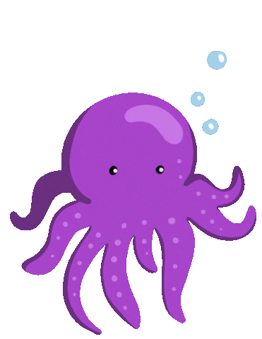

Underwater land means the land beneath the waters of the District at mean high tide or the ordinary high waterline or the elevation of the highest water stage that occurs at a frequency of once per year.
Plants need water, but too much water can be dangerous. Look above at all the adaptations that rainforest plants have to help them survive the wet environment. Life in the water can be even very hard. Very few plants have adapted to life in the water. Of all the plants on earth, only a small fraction grow in the water. Those that do have special adaptations to help them survive.
Axolotls are also known as Mexican walking fish. Their name stems from an Aztec word meaning water dog or water monster. Axolotls have cylindrical bodies, short legs, a relatively long tail and feathery external gills. They have four toes on the front feet, five toes on the back feet and moveable eyelids.